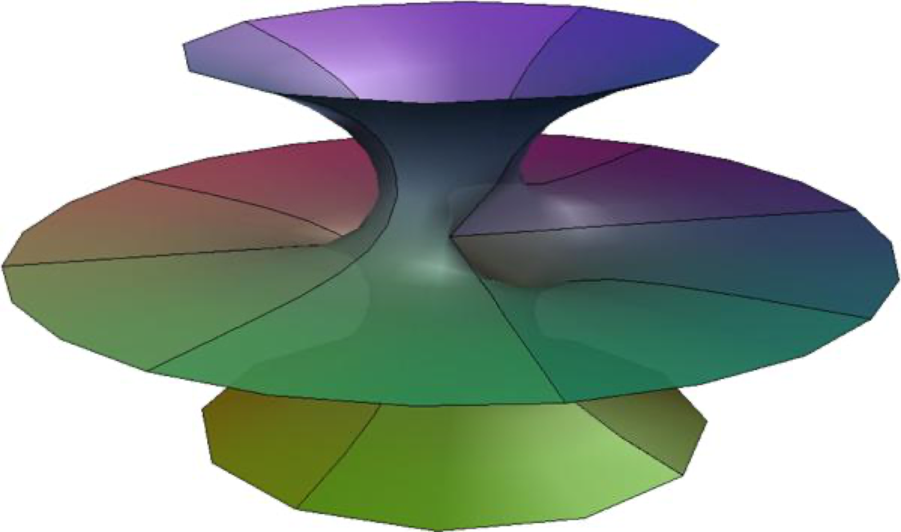
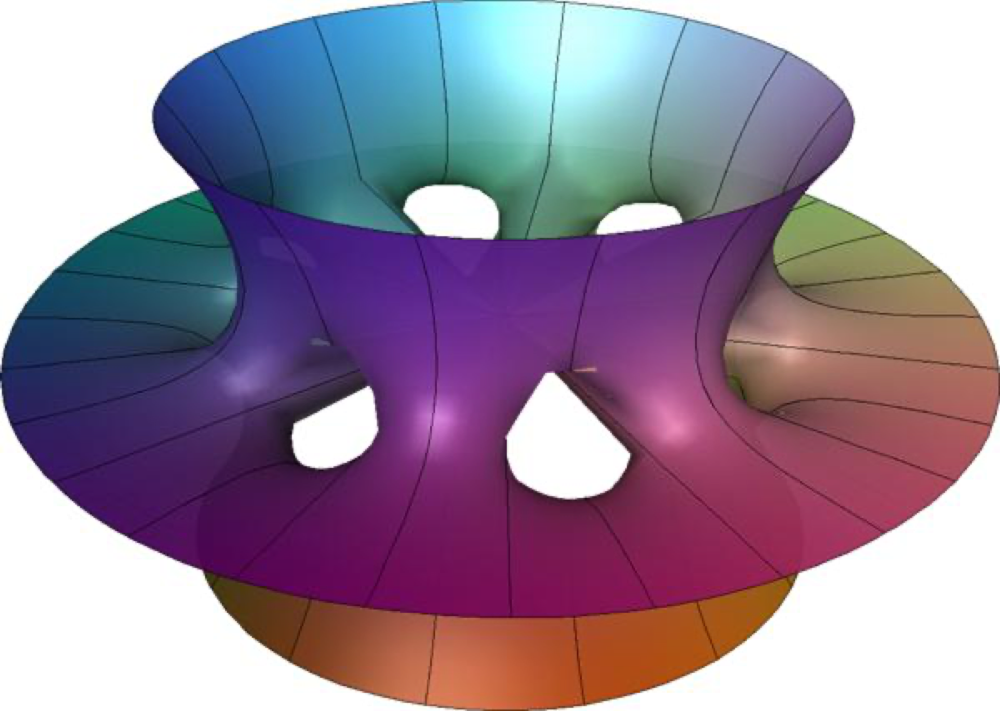

Costa–Hoffman–Meeks surfaces of genus k
Weierstrass data
\[\overline{M} = \left\{(z,w)\in(\mathbb{C}\cup\{\infty\})^2 \;\middle|\; w^{k+1} = z^k(z^2-1)\right\}.\]
ただし \(k\) は自然数である.
\[M = \overline{M}\setminus\{(\infty,\infty),(\pm 1, 0)\}, \quad g = \frac{c}{w}, \quad \eta = \frac{w}{z^2-1}\,dz.\]
各 \(k\) に対して, \(f\) が \(M\) 上一価になるような \(c\) が定まる.
グラフィックス
\(k=1,\quad c \approx 0.955978\)
ドラッグで回転 ・ スクロールでズーム ・ Ctrl+ドラッグで移動
\(k=6,\quad c \approx 0.999113\)
ドラッグで回転 ・ スクロールでズーム ・ Ctrl+ドラッグで移動

\(k=1,\quad c \approx 0.955978\)

\(k=6,\quad c \approx 0.999113\)